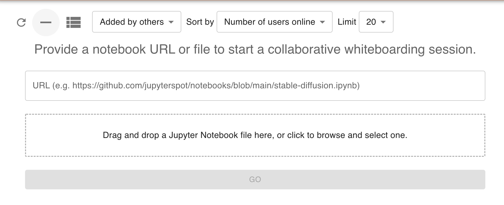
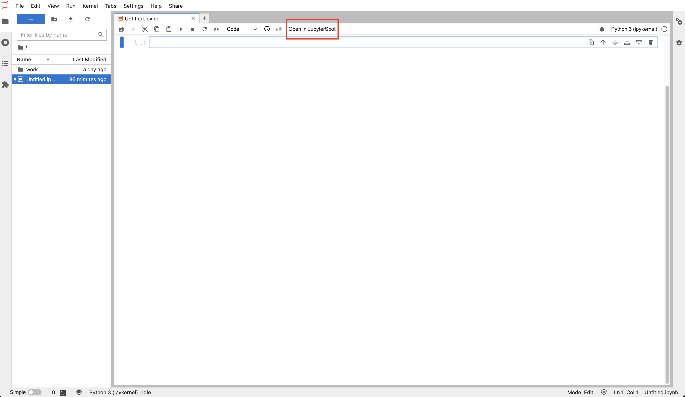
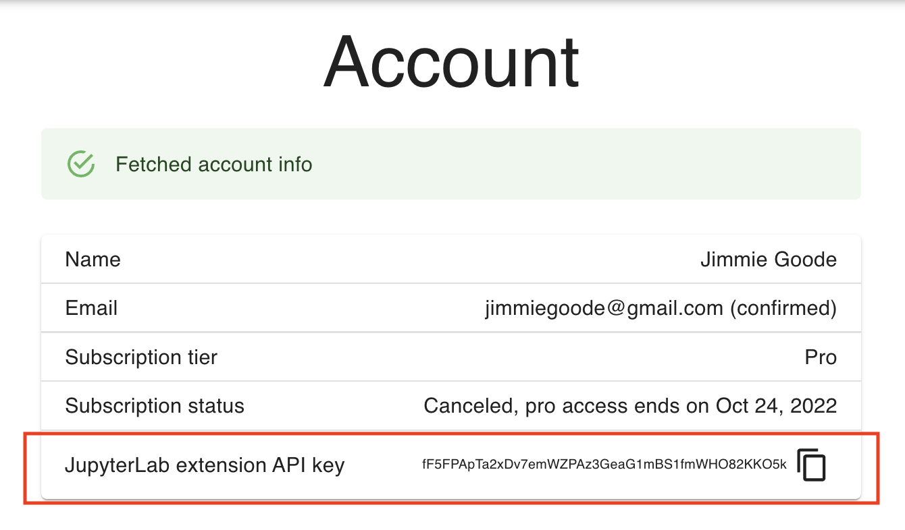
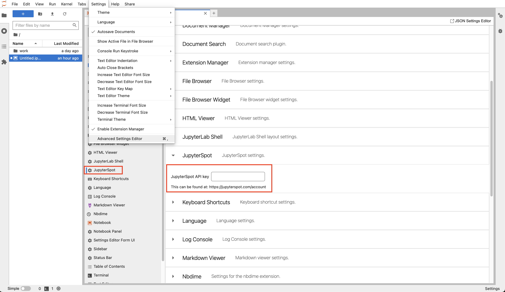
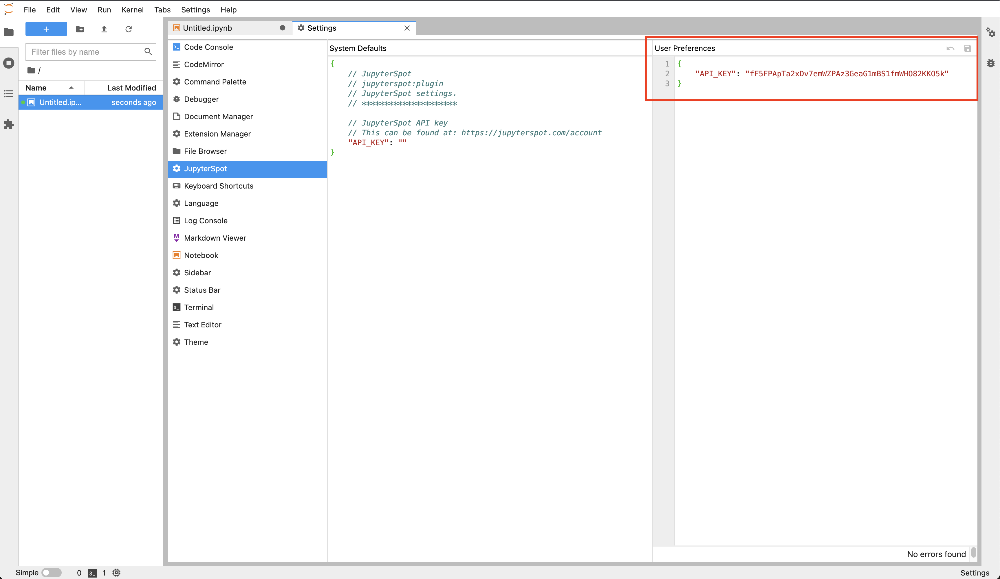
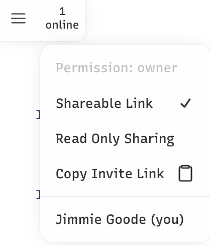

Adding your first notebook
Contents
Adding your first notebook#
Adding a notebook via URL#
There are several ways to to add your notebook to JupyterSpot. If the notebook is available from a publicly visible URL, then there are two options:
Put the URL into the form at https://jupyterspot.com/notebooks
Visit
https://jupyterspot.com/notebook?url=YOUR_NB_URL, whereYOUR_NB_URLis the notebook’s URL.
For option (1), first click the plus icon on the top left of the page. You’ll then be presented with the following form:

Enter the URL of your notebook into the form’s box, then you’ll be taken to your notebook’s whiteboard.
URL considerations#
Note that URLs must point to a raw .ipynb file. For GitHub URLs, we automatically substitute github.com with raw.githubusercontent.com so that
https://github.com/jupyterspot/notebooks/blob/main/stable-diffusion.ipynb
points to:
https://raw.githubusercontent.com.com/jupyterspot/notebooks/blob/main/stable-diffusion.ipynb.
If you’re using an URL from BitBucket for example, make sure it points to the raw notebook JSON content and not a page showing a notebook viewer embedded in it.
Adding a notebook via upload#
You can also add a notebooks via uploading them through the same form. You can either drag and drop a notebook from Finder or Explorer into the outlined area or click the outlined area and browse to the location of the notebook on your filesystem. Only .ipynb files are accepted.
Adding a notebook via JupyterLab extension#
A thrid option is to use the JupyterLab extension, which works with JupyterLab >= 3.0. To install it, run
pip install jupyterspot
This will add an “Open in JupyterSpot” button to the top menu bar when you have a notebook open:

After installing the extension, copy your API key from the account page:

Then in JupyterLab, add the key by going to Settings -> Advanced Settings Editor -> JupyterSpot. For newer versions of JupyterLab, this looks like:

For older versions of JupyterLab (~3.0), there will be a split pane of System Default and User Preferences, and you’ll need to set your key in the right side User Preferences pane and save:

Once your API key is set, you can click the “Open in JupyterSpot” button while in any notebook to create a whiteboard on jupyterspot.com from your notebook’s contents.
Start collaborating#
Once you’ve added a notebook, you can share its link with your colleagues so that they can join the whiteboarding session by clicking the “Copy Invite Link” in the upper left of the screen where the number of online users is shown:

As colleagues join, you’ll see their names added and the online count will increase.
Notebooks added by free accounts can be viewed from the public notebooks page. Any drawings, text, and sticky notes added to such notebooks can be seen by everyone else. Do not put any personal or proprietary information into these public notebooks! If you need privacy, either invite someone else to join JupyterSpot to get a private notebook, or check out the pro plan.
Notebook added by pro accounts do not appear on the list of public notebooks. Pro accounts can turn off the “Shareable Link” option shown above and toggle the “Read Only Sharing” option to restrict collaborators from editing.